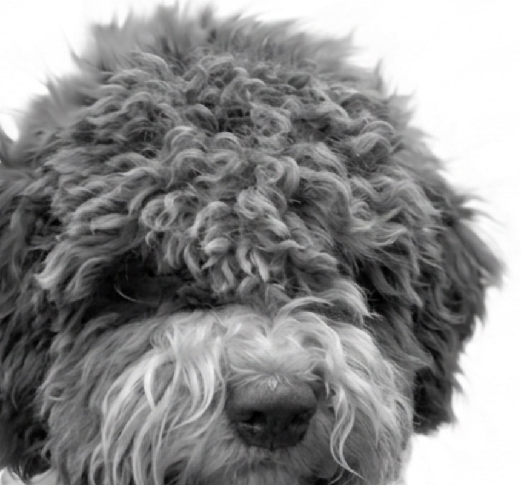

Komplexný sprievodca históriou, pracovným štandardom a anatómiou jediného špecializovaného hľuzovkára na svete.
Jediné plemeno na svete, ktoré je anatomicky a inštinktívne špecializované výhradne na hľadanie hľuzoviek.
Retrívere, sliediče a vodné psy · Vodné psy · Číslo štandardu: 298
Oblasť Romagna a delta rieky Pád – pôvodne vodný aportér z močiarov.
Zdravé a dlhoveké plemeno – pri zodpovednom chove a aktívnom živote.
Suky 41–46 cm.
Suky 11–14 kg.
Lovecký pud bol generáciami selekcie potlačený v prospech práce nosom.
Od etruských močiarov po medzinárodné uznanie
Maľby v Nekropole Spina zobrazujú psov s kučeravou srsťou, morfologicky identických s dnešným Lagottom.
Andrea Mantegna zobrazuje Lagotta na freske v Camera degli Sposi v Mantove, čo potvrdzuje historickú kontinuitu plemena.
Vysúšanie močiarov v oblasti Romagna mení pôvodného vodného aportéra (Càn Lagòt) na špecialistu na hľuzovky.
Romagnolskí kynológovia rekonštruujú čistokrvnú líniu. V roku 1988 vzniká Club Italiano Lagotto (C.I.L.).
Plemeno uznáva Medzinárodná kynologická federácia (FCI).
Každý detail stavby tela slúži práci v náročnom teréne
Skoro polovičná dĺžka hlavy so širokými nosnými dierkami pre maximálny príjem pachových molekúl pod zemou.
Vodeodolná podsada a husté kučery historicky chránili psa pred ľadovou vodou v močiaroch, dnes pred tŕním v lese.
Zreteľne vyvinuté medziprstové blany sú dedičstvom vodného psa – dnes pomáhajú pri pohybe v bahnitom teréne a hrabaní.
Dĺžka tela sa rovná výške v kohútiku. Kompaktná a silná stavba zabezpečuje vytrvalosť pri celodennej práci v náročnom teréne.
Pri práci radostne zdvihnutý, slúži ako vizuálny signál pre psovoda. Nikdy nesmie byť skrútený do tesného kruhu.
Vlnitá textúra, na povrchu polodrsná, s tesnými prstencovými kučerami a viditeľnou podsadou. Srsť na hlave je voľnejšia, tvorí obočie, fúzy a bradu.
Lagotto nemá srsť, ale vlasy, ktoré neustále rastú a neplznú. Odumreté kožné bunky a alergény zostávajú zachytené v kučerách, kým nie sú vyčesané alebo ostrihané.
Špinavo biela, hnedá (rôzne odtiene), oranžová, roan (prekvitnutá), často s bielou. Historicky boli preferované svetlé farby pre lepšiu viditeľnosť psa v lese za šera.

Dôkladné prečesanie ako prevencia tvorby plstnatých dredov – hlavne za ušami a v podpazuší.
Lagotto má sklony k hromadeniu chlpov a mazu vo zvukovode. Chlpy z uší sa musia pravidelne a jemne vytrhávať, aby sa predišlo infekciám.
Srsť sa musí kompletne ostrihať aspoň raz ročne.
Mimoriadne bystrý pes, ktorý neustále hľadá „prácu“. Rýchlo sa učí, no bez mentálnej stimulácie si nájde vlastnú zábavu – často deštruktívnu.
Aby sa pes pri hľadaní hľuzoviek nenechal vyrušiť zverou, bol lovecký inštinkt generáciami selekcie úplne potlačený. Lagotto zver neštve.
Pracuje autonómne, ale neustále udržuje kontakt. Miluje svoju rodinu, no k cudzím môže byť spočiatku rezervovaný.
Výborný a ostražitý strážca, ktorý na zmenu upozornia štekotom. Upozornenie: niektoré línie môžu mať sklony k plachosti, ak nie sú v ranom veku dôkladne socializované.
Tri fázy práce hľuzovkára
Krok je plynulý, energický klus. Hľadanie prebieha v diagonálnych líniách – pes detailne „križuje“ terén s nosom pri zemi.
Radostný a dychtivý prejav, chvost sa pri zachytení pachu zrýchlene pohybuje. Zviera ignoruje akékoľvek pachy zveri.
Keď pes presne lokalizuje hľuzovku, začne rázne hrabať. Kľúčový test: pes musí na povel psovoda hrabanie okamžite prerušiť, aby psovod bezpečne vyzdvihol hľuzovku bez jej poškodenia.
Zoznamovanie šteniatka s rôznymi povrchmi, zvukmi a lesným terénom pre budovanie absolútneho sebavedomia.
Využitie prirodzenej zvedavosti formou pachových hier – učenie psa používať nos namiesto očí.
Spojenie pachu skutočnej hľuzovky (alebo prírodnej esencie) s pozitívnou odmenou. Pes sa učí hlásiť nález bez toho, aby hľuzovku zjedol.
Presun do kultivovaných aj divokých hľuzovkových oblastí. Tréning koncentrácie a systematického prehľadávania v reálnych, rušivých podmienkach.
Etický chov Lagotto Romagnolo vyžaduje prísny skríning DNA a fyzických anomálií pred zaradením do chovu.
Záchvaty u šteniat (5–9 týždňov). Pravidlo: prenášač (Carrier) sa smie krížiť výhradne s čistým jedincom (Clear). Postihnuté psy (Affected) sa nekrížia.
Smrteľné neurodegeneratívne ochorenie. Testovanie DNA je absolútne nevyhnutné pred akýmkoľvek párením.
Röntgeny na dyspláziu bedrových a lakťových kĺbov. Akceptované sú v chove len stupne A alebo B (OFA: Excellent/Good/Fair).
Každoročný skríning certifikovaným oftalmológom na dedičné očné vady (katarakta, distichiáza).
Lagotto nie je gaučový pes. Je to vytrvalý pracovník, ktorý potrebuje štruktúru a zamestnanie – inak si prácu nájde sám (napríklad prebuduje vašu záhradu).
Prelistujte si originálnu prezentáciu, z ktorej táto stránka vychádza (kliknutím na stranu ju zväčšíte)